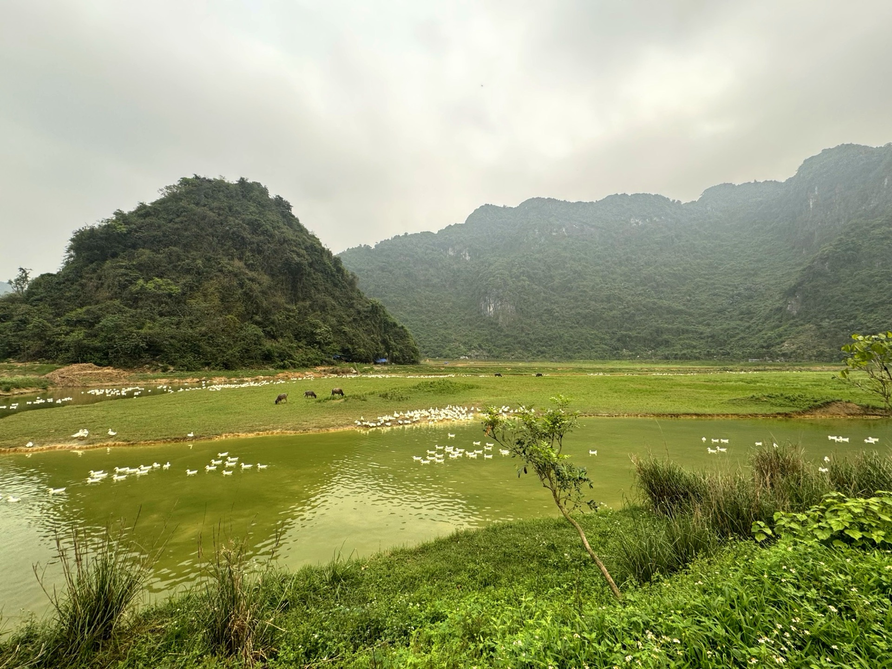

Loại hìnhTypeType
Cảnh quan thiên nhiênNatural landscapesPaysages naturels

Thung Cánh là thung lũng hoang sơ ẩn mình giữa những dãy núi đá vôi kỳ vĩ của xã Mỹ Đức. Nơi đây sở hữu hồ nước trong xanh phản chiếu núi trời và những thảm cỏ xanh mướt trải dài thênh thang, tạo nên không gian thiên nhiên nguyên sơ hiếm có ngay cạnh Thủ đô.
Thung Cánh áp dụng mô hình 5 KHÔNG trong quản lý du lịch cộng đồng, cam kết bảo vệ cảnh quan nguyên vẹn cho các thế hệ. Đặc biệt, đây là nơi du khách có thể trồng cây kỷ niệm trong chương trình Net Zero, trực tiếp đóng góp vào hành trình xanh hóa Mường Cốc.
Thung Cánh is a pristine valley nestled amidst the majestic limestone mountains of Mỹ Đức commune. It boasts a clear blue lake reflecting the sky and mountains, and vast stretches of lush green grass, creating a rare, untouched natural sanctuary right next to the Capital.
Thung Cánh implements a "5 NOs" model in community tourism management, committed to preserving its pristine landscape for future generations. Notably, visitors can plant commemorative trees here as part of the Net-Zero program, directly contributing to Mường Cốc's greening efforts.
Thung Cánh est une vallée immaculée nichée au milieu des majestueuses montagnes calcaires de la commune de Mỹ Đức. Elle abrite un lac d'un bleu limpide reflétant le ciel et les montagnes, ainsi que de vastes étendues d'herbe verdoyante, créant un sanctuaire naturel rare et intact juste à côté de la Capitale.
Thung Cánh applique un modèle "5 SANS" dans la gestion du tourisme communautaire, s'engageant à préserver son paysage immaculé pour les générations futures. Notamment, les visiteurs peuvent y planter des arbres commémoratifs dans le cadre du programme Net-Zero, contribuant directement aux efforts de verdissement de Mường Cốc.

Thung Cánh hướng tới trở thành điểm trải nghiệm thiên nhiên hoang sơ tiêu biểu của Mường Cốc, với cam kết gìn giữ nguyên vẹn cảnh quan núi đá vôi. Định hướng mở rộng chương trình Net Zero, phát triển dịch vụ cắm trại sinh thái có hướng dẫn và tăng cường các hoạt động giáo dục môi trường cho học sinh, thanh thiếu niên. Điểm đến Du lịch cộng đồng Mường Cốc, Xã Mỹ Đức – Thành phố Hà NộiThung Canh aims to become a prime destination for pristine nature experiences in Muong Coc, committed to preserving its untouched limestone mountain landscape. The plan is to expand the Net-Zero program, develop guided eco-camping services, and enhance environmental education activities for students and youth. A Muong Coc Community-Based Tourism Destination, My Duc Commune – Hanoi City.Thung Canh aspire à devenir une destination phare pour des expériences de nature sauvage à Muong Coc, s'engageant à préserver intact son paysage de montagnes calcaires. L'orientation est d'étendre le programme Net-Zero, de développer des services de camping écologique guidé et de renforcer les activités d'éducation environnementale pour les élèves et les jeunes. Une destination de tourisme communautaire à Muong Coc, commune de My Duc – Ville de Hanoi.